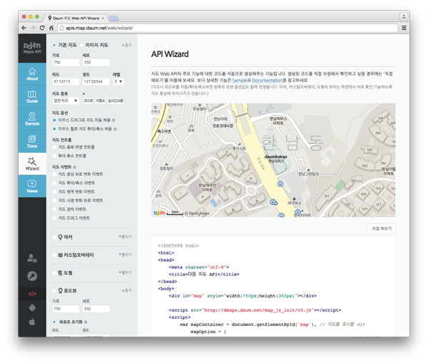

Services Library로 제공되는 주소 검색(주소로 좌표 얻기, Geocoding)의 검색 엔진 성능이 개선 되었습니다.
기존에는 입력한 주소에 건물명이 포함되면 결과를 잘 찾아주지 못하는 현상이 있었습니다.
이 점을 개선하고자 검색어 분석능력이 보다 향상된 검색 엔진을 적용하였습니다.
검색어에 내재된 중의적인 표현을 대응할 수 있으며 기존에 찾지 못했던 위치 정보를 결과에 포함시킬 수 있습니다.
결과적으로 기존에 매칭되지 않았던 유효한 결과들을 받아 볼 수 있게 됩니다.
자세한 변경 사항은 DevTalk 공지를 참고해주세요.
REST API와 관련된 내용이지만 AddressSearch가 해당 API를 사용하고 있기 때문에 변경 내용은 동일합니다.
기존의 AddressSearch로 제공되는 검색 방식(exact)은 이 개선된 방식(similar)으로 자동 적용됩니다. 만약 이 전의 검색 방식(exact)을 그대로 사용하고 싶다면 옵션으로 별도 설정해야 합니다.
자세한 사용 방법은 documentation에서 확인할 수 있습니다.
Kakao 지도 Javascript API에 지도 레벨을 제한할 수 있는 기능이 추가되었습니다.
최대값 및 최소값을 지정하여 사용자가 해당 레벨을 벗어나도록 zoom할 수 없도록 제한하는 기능입니다.
자세한 내용은 documentation을 확인해주세요.
변경되기 전의 Services 라이브러리의 문서를 첨부합니다.
JS API가 카카오 인증 버전으로 바뀌는 것과 동시에 Services 라이브러리에 대한 개편도 함께 이루어 졌습니다.
이에 기존 버전을 사용하고 계신 개발자분들의 유지/보수를 고려하여 변경 전 버전의 문서를 아래에 첨부합니다.
services 라이브러리 네임스페이스.
장소 검색 및 주소-좌표 간 변환 서비스를 포함하고 있다.
라이브러리를 사용하기 위해서는 반드시 별도 로드 해야 한다.
응답 코드가 상수로 정의되어 있다.
STATUS 값으로 사용 가능한 목록은 다음과 같다.
- OK : 검색 결과 있음
- ZERO_RESULT : 정상적으로 응답 받았으나 검색 결과는 없음
- RESULT_NOT_FOUND : 결과를 찾을 수 없음. 위의 ZERO_RESULT와 동일한 상태를 의미
- ERROR : 서버 응답에 문제가 있는 경우
정렬을 위한 옵션 값이 상수로 정의되어 있다.
장소 검색( keywordSearch, categorySearch )에서 결과의 정렬을 위해 사용한다.
SORT_BY 값으로 사용 가능한 목록은 다음과 같다.
- ACCURACY : 정확도 순
- POPULARITY : 인기도 순
- DISTANCE : 거리 순
이 중, DISTANCE 을 사용하기 위해서는 또 다른 옵션 중 하나인 location 이 함께 지정되어 있어야 한다.
이미지의 유무로 검색 결과를 필터링 하는 옵션 값이 상수로 정의되어 있다.
장소 검색( keywordSearch, categorySearch )에서 결과의 필터링을 위해 사용한다.
IMAGE_FILTER 값으로 사용 가능한 목록은 다음과 같다.
검색 결과의 포멧을 지정하는 옵션 값이 상수로 정의되어 있다.
좌표-주소 변환( coord2addr )에서 결과의 포멧을 지정하기 위해 사용한다.
이 옵션 값을 지정하지 않으면 주소의 fullname을 출력한다.
- FORMAT 값으로 사용 가능한 목록은 다음과 같다.
- SIMPLE : 간단한 주소 형태로 출력
좌표 변환을 지원하는 좌표계가 상수로 정의되어 있다.
좌표 변환( transCoord )에서 변환을 위해 입력한 좌표의 좌표계와 변환 결과로 받을 출력 좌표계를 지정하기 위해 사용한다.
Coords 값으로 사용 가능한 목록은 다음과 같다.
- TM : TM 좌표계
- KTM : KTM 좌표계
- UTM : UTM 좌표계
- CONGNAMUL : CONGNAMUL 좌표계
- WGS84 : WGS84 좌표계
- BESSEL : BESSEL 좌표계
- WTM : WTM 좌표계
- WKTM : WKTM 좌표계
- WUTM : WUTM 좌표계
- WCONGNAMUL : WCONGNAMUL 좌표계
장소 검색 서비스.
장소 검색 서비스 객체를 생성한다.
지도 객체를 인자로 넣을경우, 검색에 필요한 옵션들 중 location 이 자동으로 현재 지도의 중심 좌표로 설정되어 검색을 시도한다. 필요에 따라서는 useMapBounds 옵션을 통해 현재 지도에 보여지는 영역을 자동 지정할 수 있다.
var places = new kakao.maps.services.Places();
map Map : 지도 객체
지도 객체를 설정한다. 이미 설정되어 있는 지도는 setMap(null) 로 해제 가능하다.
var places = new kakao.maps.services.Places();
places.setMap(map);
map Map
입력한 키워드로 검색한다.
var places = new kakao.maps.services.Places();
var callback = function(status, result) {
if (status === kakao.maps.services.Status.OK) {
console.log(result);
}
};
places.keywordSearch(‘판교 치킨’, callback);
/*
다음과 같이 필요한 파라미터를 객체형식으로도 넘길 수 있다
places.keywordSearch({
keyword : ‘판교 치킨’,
callback : callback
});
*/
keyword String : 검색할 키워드
callback Function : 검색 결과를 받을 콜백함수
options Object
location LatLng : 중심 좌표. 특정 지역을 기준으로 검색한다.
radius Number : 중심 좌표로부터의 거리(반경). 미터(m) 단위이다. 기본값은 5000
bounds LatLngBounds : 검색할 사각형 영역
page Number : 검색할 페이지. 기본값은 1
sort SortBy : 정렬 옵션. 기본값은 0(정확도 순)
image ImageFilter : 정렬 옵션. 기본값은 0(정확도 순)
useMapBounds Boolean : 지정한 Map 객체의 영역을 사용할지의 여부. 참일 경우, bounds 속성은 무시된다. 기본값은 false
Callback Arguments
status Status : 응답 코드
result Array : 결과 목록
pagination Pagination : Pagination 객체
주어진 카테고리 코드로 검색한다.
카테고리 코드는 사전 공지 후 언제든지 변경될 수 있다.
카테고리 검색은 반경 검색이 기본이므로 location 값이 필수이다.
Map 객체를 지정하여 지도에 나타난 지역의 중심이 자동으로 location 값에 할당되도록 하거나 직접 좌표객체를 생성하여 넣어주어야 한다.
var places = new kakao.maps.services.Places();
var callback = function(status, result) {
if (status === kakao.maps.services.Status.OK) {
console.log(result);
}
};
// 공공기관 코드 검색
places.categorySearch(‘PO3’, callback, {
// Map 객체를 지정하지 않았으므로 좌표객체를 생성하여 넘겨준다.
location: new kakao.maps.LatLng(37.564968, 126.939909)
});
/*
다음과 같이 필요한 파라미터를 객체형식으로도 넘길 수 있다
places.categorySearch({
code :‘PO3’,
callback : callback,
location: new kakao.maps.LatLng(37.564968, 126.939909)
});
*/
code String : 검색할 카테고리 코드
callback Function : 검색 결과를 받을 콜백함수
options Object
location LatLng : 중심 좌표. 특정 지역을 기준으로 검색한다. 카테고리 검색에서는 필수.
radius Number : 중심 좌표로부터의 거리(반경). 미터(m) 단위이다. 기본값은 5000
bounds LatLngBounds : 검색할 사각형 영역
page Number : 검색할 페이지. 기본값은 1
sort SortBy : 정렬 옵션. 기본값은 0(정확도 순)
image ImageFilter : 정렬 옵션. 기본값은 0(정확도 순)
useMapBounds Boolean : 지정한 Map 객체의 영역을 사용할지의 여부. 참일 경우, bounds 속성은 무시된다. 기본값은 false
status Status : 응답 코드
result Array : 결과 목록
pagination Pagination : Pagination 객체
services.GeocoderMethods
주소-좌표간 변환 서비스 객체를 생성한다.
var geocoder = new kakao.maps.services.Geocoder();
주소 정보에 해당하는 좌표값을 요청한다.
var geocoder = new kakao.maps.services.Geocoder();
var callback = function(status, result) {
if (status === kakao.maps.services.Status.OK) {
console.log(result);
}
};
geocoder.addr2coord(‘해남군 송지면’, callback);
/*
다음과 같이 필요한 파라미터를 객체형식으로도 넘길 수 있다
geocoder.addr2coord({
addr : ‘해남군 송지면’,
callback: callback
});
*/
addr String : 변환할 주소명
callback Function : 검색 결과를 받을 콜백함수
options Object
page Number : 검색할 페이지. 기본값은 1
Callback Arguments
status Status : 응답 코드
result Array : 결과 목록
pagination Pagination : Pagination 객체
coord2addr(coord, callback, options)
좌표 값에 해당하는 행정동 주소 정보를 요청한다.
var geocoder = new kakao.maps.services.Geocoder();
var coord = new kakao.maps.LatLng(37.56496830314491, 126.93990862062978);
var callback = function(status, result) {
if (status === kakao.maps.services.Status.OK) {
console.log(‘그런 너를 마주칠까 ’ + result0.fullName + ’을 못가’);
}
};
/*
다음과 같이 필요한 파라미터를 객체형식으로도 넘길 수 있다
geocoder.coord2addr({
coord : coord,
callback : callback
});
*/
coord LatLng : 변환할 좌표
callback Function : 검색 결과를 받을 콜백함수
options Object
format Format : 결과 출력 옵션
Callback Arguments
status Status : 응답 코드
result Array : 결과 목록
좌표 값에 해당하는 법정동 상세주소정보를 요청한다.
var geocoder = new kakao.maps.services.Geocoder();
var coord = new kakao.maps.LatLng(37.566826, 126.9786567);
var callback = function(status, result) {
if (status === kakao.maps.services.Status.OK) {
};
geocoder.coord2detailaddr(coord, callback);
/*
다음과 같이 필요한 파라미터를 객체형식으로도 넘길 수 있다
geocoder.coord2detailaddr({
coord : coord,
callback : callback
});
*/
h5.Parameters
coord LatLng : 변환할 좌표
callback Function : 검색 결과를 받을 콜백함수
options Object
format Format : 결과 출력 옵션
status Status : 응답 코드
result Array.< Object > : 결과 목록
x Number : 경도 좌표
y Number : 위도 좌표
region String : 동 주소
regionId String : 동 ID
roadAddress Object : 도로명주소 정보
name String : 상세 주소
ho String : 호
bunji String : 길 번호
roadName String : 길 이름
jibunAddress Object : 지번주소 정보
san String : 산 여부 (N/Y)
name String : 상세 주소
ho String : 호
bunji String : 번지
입력한 좌표를 다른 좌표계의 좌표로 변환한다.
var geocoder = new kakao.maps.services.Geocoder(),
wtmX = 160082.538257218,
wtmY = -4680.975749087054;
var callback = function(status, result) {
if (status === kakao.maps.services.Status.OK) {
console.log(result.x); // 126.570667
console.log(result.y); // 33.45070100000001
}
};
// WTM 좌표를 WGS84 좌표계의 좌표로 변환한다
geocoder.transCoord(wtmX,
wtmY,
kakao.maps.services.Coords.WTM,
kakao.maps.services.Coords.WGS84,
callback);
/*
다음과 같이 필요한 파라미터를 객체형식으로도 넘길수도 있다
geocoder.transCoord({
x : wtmX,
y: wtmY,
fromCoord : kakao.maps.services.Coords.WTM,
toCoord : kakao.maps.services.Coords.WGS84,
callback : callback
});
*/
x Number : 변환할 x 좌표
y Number : 변환할 y 좌표
fromCoord Coords : 변환을 위해 입력한 좌표의 좌표계
toCoord Coords : 변환 결과로 받을 출력 좌표의 좌표계
callback Function : 변환 결과를 받을 콜백함수
status Status : 응답 코드
result Object : 변환된 좌표 결과
x Number : 변환된 x 좌표
y Number : 변환된 y 좌표
Daum Developers에서 API KEY 발급이 중단될 예정입니다.
기존 Daum Developers에서 발급 받은 API KEY를 사용할 수는 있지만, SDK 업데이트는 지원되지 않습니다.
앞으로 새로운 기능추가 및 버그 수정은 카카오 APP KEY 인증을 사용하는 최신 SDK에서만 지원될 예정이오니, 최신 버젼 SDK로 업데이트를 권장합니다.
Kakao Developers에서 APP KEY 발급 방법은 가이드를 참고해주세요.
기존 개발자 사이트의 Sample 상세 및 Wizard 탭에서 지원하고 있었던 “직접 해보기” 기능은 이제 Internet Explorer 9 버전 이하 브라우저에서는 사용할 수 없습니다.
해당 기능이 개발자 사이트를 서비스하고 있는 서버의 보안에 치명적인 영향을 줄 수 있는 가능성이 발견되었습니다.
이 기능을 보안 취약성이 없는 다른 방법으로 변경하는 과정에서
구형 브라우저에는 변경 후에도 여전히 문제의 소지가 있다고 판단, 해당 기능을 제한하게 되었습니다.
기존 IE9 이하의 브라우저에서 개발하시던 개발자분들은 직접 해보기 기능이 필요할 경우,
크롬 브라우저를 사용하여 접속해 주시면 정상적으로 이용 가능합니다.
Kakao 지도 Javascript API에 Drawing Library 가 추가되었습니다.
이 라이브러리를 사용하면 마커, 다각형, 원, 사각형, 선 등 지도 API에서 제공하는 그리기 요소들을
마우스를 이용해 지도에 쉽게 표시할 수 있습니다.
Drawing Library 를 사용한 아래의 샘플도 추가되었으니 많이 사용해주세요!
Drawing Library 사용하기
Drawing Library에서 데이터 얻기
Toolbox 사용하기
Drawing undo, redo
Drawing Library 를 사용하기 위해서는 Library 별도 로드 가 필요합니다.
자세한 내용은 documentation 을 확인해주세요.
Kakao 지도 Javascript API에 “여러개 마커에 이벤트 등록하기” 샘플이 추가되었습니다.
첫번째 샘플은 Javascript의 Closure를 이용해 여러개의 마커에 마우스 오버 이벤트를 등록해 각각 다른 내용의 인포윈도우를 표시합니다.
두번째 샘플은 여러개의 마커에 마우스오버, 아웃, 클릭 이벤트를 등록해 이벤트마다 마커에 각각 다른 이미지를 표시합니다.
자세한 내용은 Sample의
여러개 마커에 이벤트 등록하기1 샘플과 여러개 마커에 이벤트 등록하기2 샘플을 확인해주세요.
Kakao 지도 Javascript API에 지적편집도 지도 오버레이 타입이 추가되었습니다.
지적편집도 오버레이 타입은 현행 지적 정보와 일치하지 않을 수 있으며 참고 이외의 용도로 사용하실 수 없습니다.
자세한 내용은 documentation과
지도 위에 오버레이를 추가하는 샘플 지도 타입 바꾸기1, 지도 타입 바꾸기2 를 확인해주세요.
Kakao 지도 Javascript API에 클러스터러 라이브러리가 추가되었습니다.
이 라이브러리를 사용하면 클러스터링 마커를 쉽게 사용할 수 있습니다.
클러스터러 라이브러리를 사용한 아래의 샘플도 추가되었으니 많이 사용해주세요!
마커 클러스터러 사용하기
마커 클러스터러에 클릭이벤트 추가하기
클러스터 마커에 텍스트 표시하기
마커 클러스터러를 사용하기 위해서는 Library 별도 로드 가 필요합니다.
자세한 내용은 documentation을 확인해주세요.
Kakao 지도 Javascript API에 새로운 기능이 추가되었습니다.
1. Map 객체에 지도 타일 이미지가 표시될 때 애니메이션 효과를 줄 수 있는 tileAnimation 옵션이 추가 되었습니다.
기본값은 true 이며 타일의 애니메이션 효과를 제거하고 싶은 경우 지도 객체를 생성할 때 tileAnimation 옵션을 false 로 설정하세요.
2. Tileset 객체 생성옵션에 getTile 옵션이 추가되었습니다.
이제 Tileset을 생성할 때 이미지 URL이 아닌 getTile 옵션을 이용해 다른 HTML Element를 지도에 표시할 수 있습니다!
자세한 내용은 documentation 과 커스텀 타일셋2 샘플을 확인해주세요.
Services Library의 Geocoder 객체에 위치 좌표로 법정동 상세정보를 요청하는 coord2detailaddr 메소드가 추가되었습니다.
자세한 내용은 documentation과 좌표로 주소를 얻어내기 샘플을 확인해주세요!
Kakao 지도 Javascript API에 새로운 기능이 추가되었습니다!
1. Map 객체에 지도 타일 이미지가 모두 로드되었을 때 발생하는 tilesloaded 이벤트가 추가되었습니다.
2. (Polyline, Polygon, Circle, Ellipse, Rectangle) 객체에 mousemove, click 이벤트가 추가되었고
모든 이벤트 핸들러의 매개변수로 MouseEvent를 받을 수 있도록 수정되었습니다.
이를 이용하여 이벤트가 발생되었을 때 마우스커서의 위치 정보를 확인 할 수 있습니다.
자세한 내용은 documentation과
샘플 타일로드 이벤트 등록하기, 다각형에 이벤트 등록하기2 를 확인해주세요.
Kakao 지도 Javascript API의 MapProjection 객체에
지도 컨테이너 내부 영역 좌표와 화면 픽셀좌표 간 변환 할 수 있는 containerPointFromCoords, coordsFromContainerPoint 메소드와
지도 컨테이너 외부 영역 좌표를 포함하여 좌표를 변환 할 수 있는 pointFromCoords, coordsFromPoint 메소드가 추가되었습니다.
자세한 내용은 관련 샘플 커스텀오버레이를 드래그 하기 , 지도 영역 밖의 마커위치 추적하기 와
documentation을 확인해주세요.
Kakao 지도 Javascript API에 trigger 메소드가 추가 되었습니다.
다음 지도 API 객체에 등록된 이벤트를 trigger 메소드를 이용해 발생시킬 수 있습니다.
이미지 지도의 최대 크기가 추가 되었습니다.
이미지 지도의 최대 크기는 2048×2048로 이 이상 큰 이미지를 요청하면 이미지가 표시되지 않으니 참고해주세요.
자세한 내용은 documentation을 확인해주세요.
Daum 지도 Javascript API에 키보드로 지도를 움직이거나 확대, 축소할 수 있는 keyboardShortcuts 옵션이 추가되었습니다.
지도를 생성할때 옵션값으로 설정 할 수 있고, 지도 객체의 setKeyboardShortcuts 메소드로 설정할 수도 있습니다.
keyboardShortcuts을 true로 설정하면 키보드의 방향키와 +, -키로 지도를 움직이고 확대, 축소 할 수 있습니다.
또 지도 좌측 하단의 copyright의 위치를 오른쪽 아래로 변경할 수 있는 setCopyrightPosition 메소드가 추가되었습니다.
Kakao 지도 Javascript API에 마커의 투명도를 설정할 수 있는 Opacity 옵션이 추가 되었습니다.
투명도는 마커를 생성할 때 설정할 수 있고
마커 생성 후에도 setOpacity, getOpacity 메소드를 이용해 설정하거나 설정된 값을 얻어올 수 있습니다.
자세한 사용방법은 Documentation을 확인해주세요.
Kakao 지도 Javascript API에서는 타입 컨트롤과 줌 컨트롤은 제공하고 있지만 로드뷰 컨트롤은 직접 구현해야 하는데요. 그래서!
지도 위 버튼으로 로드뷰 표시하기 Sample을 준비했습니다!
또, 지도 위에 특정 장소를 마커로 표시하고 로드뷰로 보여주고 싶을 때 로드뷰에서 특정 장소가 잘 보이도록 설정하는
로드뷰와 지도 토글하기 Sample도 추가되었습니다.
로컬API의 좌표계 변환 을 Kakao 지도 Javascript API에서 바로 사용할 수 있도록 메소드를 추가했습니다.
지원하는 좌표계는 TM, CONGNAMUL, WGS84, WTM, WCONGNAMUL 좌표계가 있으며,
자세한 사용법과 설명은 WTM 좌표를 WGS84좌표로 변환하기 Sample과 Documentation에서 확인할 수 있습니다.
Docs의 strokeStyle 중 dash style 표기 오류가 수정되었습니다.
지도 API를 좀 더 쉽게 이용하는 방법. Wizard를 소개합니다.
Kakao 지도 개발자들도 모든 객체 명과 속성값을 외우고 있진 못합니다. 기본적인 code를 생성해주거나 옵션값을 조정할 수 있는 Tool을 만들어서 사용하고 있죠.
Wizard는 내부적으로 사용하던 Tool들을 통합한 Kakao 지도 API Generator입니다.

기본 지도를 띄우는 코드를 시작으로, 마커와 커스텀오버레이, 도형을 지도 위에 올린 코드가 자동으로 생성됩니다. 로드뷰를 띄운 후에는 마커와 커스텀오버레이를 로드뷰 위에 올릴 수 있습니다. 지도와 로드뷰를 이동시켜 원하는 위치와 시야각 등의 값을 쉽게 얻어낼 수도 있습니다.
(이미지 지도는 이동이 불가능하니, 먼저 기본 지도에서 위치를 조정하신 후에 이용하시면 됩니다)
Wizard는 모든 기능과 옵션을 담고 있지는 않습니다. 단지 주요 기능에 대한 기본 code를 생성하고, 옵션 조정을 도와주는 정도입니다. 생성된 코드를 이용하여 원하는 기능을 완성하는 것은 개발자의 몫입니다.
하지만 이 정도의 기본 코드만으로도 Documentation을 찾아보는 수고가 덜어질 수 있을 거로 생각하며, 저희는 실제로 큰 효과를 보고 있답니다. Kakao 지도 API를 처음 접하는 분들에게도 전체적인 기능을 훑어보는 데 도움이 될 거로 생각합니다.
일단 한번 이것저것 클릭해보세요. 그리고 (코드 상단에 있는 버튼) ‘직접 해보기’를 이용하여 직접 코드를 수정해보거나 실제 동작도 확인해보세요. 기능에 대한 문의가 있거나 버그를 발견하셨다면 개발자 포럼에 올려주시면 됩니다. 물론 추가 기능 제안도 언제나 환영입니다.
Kakao 지도 API를 더욱 편하게 사용할 수 있도록 계속 노력하겠습니다.
WEB API의 수정사항이나, 추가된 기능들을 빠르고 정확하게 전달하고자 업데이트 뉴스 메뉴가 추가되었습니다.
앞으로 모든 변경사항 이력은 여기에서 보실 수 있습니다.